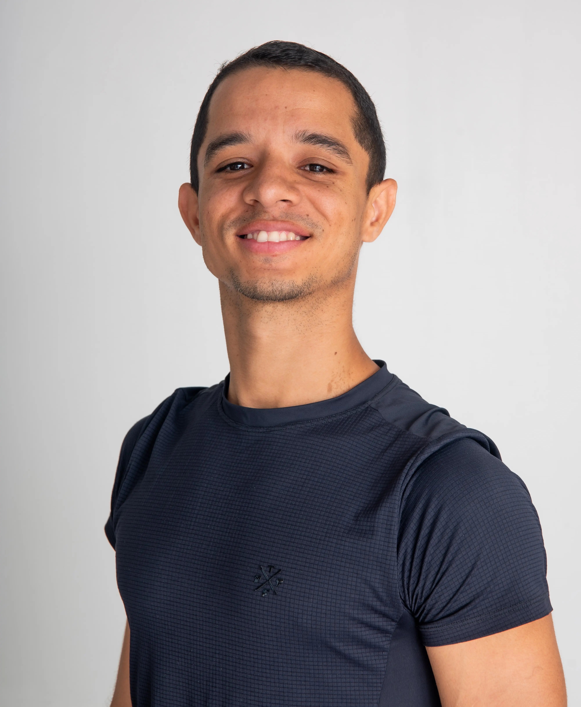
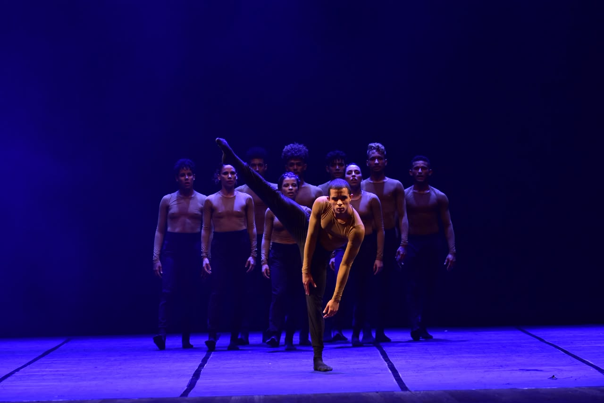
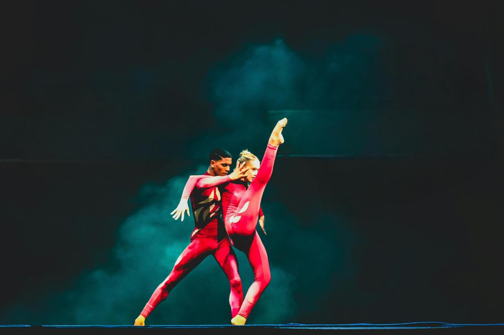

Bailarino, coreógrafo e professor de dança contemporânea com trajetória nacional e internacional, atuando na formação de artistas, criação coreográfica e avaliação em festivais de dança.
Anos de Experiência
Países de Atuação
Apresentações
Premiações

Bailarino, coreógrafo, professor e jurado de dança com atuação nacional e internacional.
Atualmente integra a Companhia Municipal de Dança de João Pessoa, onde atua também como Professor de Dança Contemporânea e Coreógrafo Residente.
Sua trajetória inclui experiências artísticas na Suíça, Áustria e Alemanha, desenvolvendo trabalhos em performance, criação, formação artística e direção.

Exchange Dance Program
Atuação como bailarino, coreógrafo e assistente de direção.
St. Gallen • Teufen • Basel
Circuito internacional de apresentações.
Dornbirn • Innsbruck
Intercâmbio artístico junto ao Ballet Augsburg.
Atuação em companhias, espetáculos e projetos nacionais e internacionais.
Criação de obras, remontagens e processos coreográficos para companhias e festivais.
Formação técnica e artística em dança contemporânea para diferentes níveis.
Avaliação de trabalhos, feedback artístico e orientação pedagógica em festivais.
Professor de Dança Contemporânea Coreógrafo Residente Atuação em processos de criação, formação artística e montagem de repertório.
Vivência artística junto ao Ballet Augsburg, aprofundando processos criativos e intercâmbio internacional em dança contemporânea.
Bailarino
Coreógrafo
Assistente de Direção
Primeiro contrato profissional como bailarino, marcando o início da trajetória artística.

Concebida para o Festival de Inverno de Bonito (MS), a obra utiliza a água como elemento simbólico central, inspirando-se na fluidez dos rios, na força dos redemoinhos e na sincronia dos cardumes.
A criação propõe uma experiência imersiva onde movimento, natureza e sensibilidade se encontram em fluxo contínuo.
Coreografia assinada por Evana Arruda e Maxwell Araújo, desenvolvida especialmente para o Festival de Inverno de Bonito 2025.
Bonito-MS
Campina Grande-PB
Fernando de Noronha-PE
Companhia Municipal de Dança de João Pessoa
2025
Premiações
Festivais Nacionais
Títulos de Melhor Coreógrafo
Melhores Bailarinos Premiados
FAC Festival 2022
Festival Cena 2023
1º Lugar Solo Jazz Avançado
Festival Internacional de Goiás 2024
1º Lugar Duo Jazz Avançado
Melhor Trio – FAC Festival 2022
Melhor Conjunto – FAC Festival 2022
Melhor Conjunto – Festival Cena 2023
Coreografias premiadas que contribuíram para títulos de Melhor Bailarino conquistados por Gabriel Morais.
Joinville 2024
Goiás 2025
FIDPOA 2025
Disponível para festivais, workshops, residências artísticas, montagem de espetáculos, processos criativos e projetos em dança.